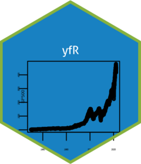

Changelog
Source:NEWS.md
Version 1.1.0 (2023-01-30) – major version
CRAN release: 2023-02-16
Thank you Henrique for the work in both, live prices and dividends!
Version 1.0.3 (2022-10-20) – bug fixes
CRAN release: 2022-10-31
- fixed bug on number of files at cache folder
Version 1.0.2 (2022-08-21) – bug fixes
CRAN release: 2022-08-27
- changed FB ticker to META
- fixed bug in calculation of log accumulated returns
- fixed bug in order of tickers (now it makes sure the ticker symbol is sorted)
Version 1.0.1 (2022-08-15) – bug fixes
CRAN release: 2022-08-15
- fixed bug with FB ticker (change to TSLA)
Version 1.0.0 (2022-06-22) – CRAN SUBMISSION
CRAN release: 2022-06-30
- many pkg changes after ropensci approval
- github repo is now under https://github.com/ropensci/yfR
- changed all by (as suggested by CRAN team)
- used n_cores = 2 (as suggested by CRAN)
Version 0.0.2 (2022-05-02)
- Added warning message for parallel option (yahoo finance has just set a api limit)
- Fixed typos in readme.md
Version 0.0.1 (2022-03-28)
- First version, ported from BatchGetSymbols